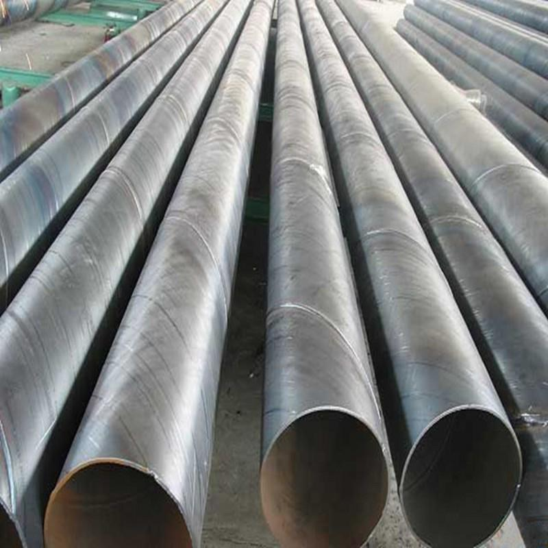

螺旋管价格管出口的下滑加重对后市的悲观情绪

中钢协最新数据,6月下旬国际重点热镀锌螺旋钢管日均产量较上一旬大降8%以上,创出2014年4月上旬以来的最低程度。同时,6月下旬末重点钢企钢材的库存量也有所下降。虽然这组数据稍有缓解供需失衡压力,但是市场低迷的行情仍难改动。在之前刚上任的住建部部长也表示过下半年楼市定调去库存为主。近期发布的114家上市房企的年报显示，上半年有过半房企业绩下滑，其中少数企业完成年总目的低于50%，一般亦不到30%。上市房企业绩都这样了，何况是其他企业呢。业内人士称，关于年中表现较差的房企，接上去将会加大促销、降价等力度来去库存，放慢资金回转以完成年终目的。螺旋管价格，而不少资金绝对较雄厚或早已定位转型的房企曾经开端加大副业的开展，以防止在主营业务上耗死，切断资金流。
端午节前一周，钢市自始自终的冷落，并无传统的节前备货气氛；钢铁需求的淡化、钢厂消费的增产，本钱的持续跳水，是乎都缺乏以引发市场太多的变化，犹如迟暮的老人，蹒蹒珊珊的持续前行。近期钢价下行不时，然热镀锌螺旋钢管出口的下滑减轻对后市的失望心情。虽然，总体来看我国钢材出口总量上占我国粗钢总产量的比例较小，但是这一局部小小的出口量却能为国际市场分担不少的流量。但是从6月份钢材出口状况来看，较上月有所增加，6月份至7月份，在国际需求最空缺的时段，出口量还有所增加，这关于钢市来说无疑是雪上加霜的。6月份，国际需求曾经令人不堪回首了，不论是制造业还是其他下游行业，都依然在走弱。受微观经济增速回落影响，市场决心缺乏，国际市场钢价仍然疲软，前期热镀锌螺旋钢管价钱仍将呈动摇下跌走势。钢价减速探底，为清库存。钢厂加大向市场让利幅度，使得盈利空间持续收窄，受此影响，带动局部钢厂增产限产举措有所增强，其消费热情分明回落。据中钢协最新数据显示，重点钢企6月下旬粗钢日产量为167.68万吨，旬环比大降8.35%。剖析师指出，下游需求疲软、钢厂盈利收窄虽然是增产的直接导火索；然真正的应该表现在资金压力上，重庆防腐螺旋钢管厂回款困难，银行持续限贷、螺旋管价格。抽贷，少数钢厂活动资金无限缺乏以支撑高位消费活动，纷繁暂停消费线，增加消费运营压力。
地址：河北沧州螺旋钢管生产基地
手机：186-3170-5801 == QQ791117